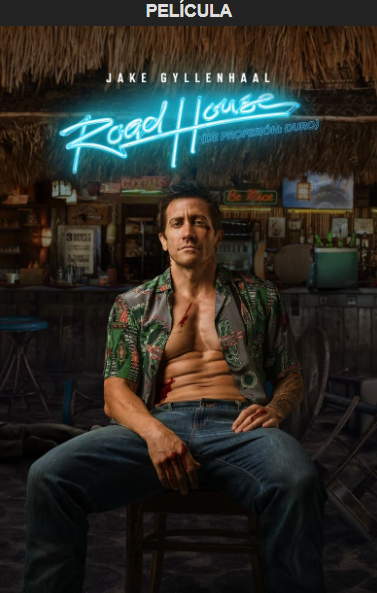

Sinopsis
Dalton es un exluchador de la UFC en horas bajas que acepta un trabajo como portero en un conflictivo bar de carretera de los Cayos de Florida, sólo para descubrir que este paraíso no es todo lo que parece... Remake de la película de 1989 con Patrick Swayze.